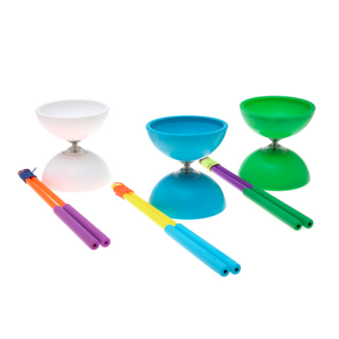

Por malabarismo o juegos malabares se entiende al arte de manipular y ejecutar espectáculos con uno o más objetos a la vez volteándolos, manteniéndolos en equilibrio o arrojándolos al aire alternativamente, por lo común sin dejar que caigan al suelo. Los malabares se conocen por su dificultad y belleza visual, para esto se necesita cierta habilidad psicomotriz por parte de quien los realiza, al cual se le llama malabarista. Para ello, el malabarista se sirve de diversas partes del cuerpo, principalmente de las manos, pero también de los pies, brazos y/o cabeza. Los juegos malabares son unas de las atracciones clásicas del circo.
Historia
El malabarismo es una tradición muy antigua. En el Antiguo Egipto, en los tiempos del príncipe Beni Hassan (1794 a 1781 a. C.) ya se conocían mujeres que hacían malabarismo. De hecho hay varias pinturas de egipcios haciendo malabarismo de pie. Otra fuente de información es el Talmud, donde se hace referencia a un rabino que se dice hizo malabares con ocho antorchas encendidas y también con vasos de vino, sin derramar ninguna gota. En 1930 en gran parte de Europa y Norteamérica se hizo muy popular el «espectáculo de variedades» entre las clases medias-altas, que sacó a los malabaristas de las calles y cárceles europeas y los hizo trabajar en teatros y circos. Las tablas y escenarios acondicionaban una gran variedad de trucos como malabares, personas extravagantes y equilibrios, los cuales se hicieron rápidamente populares y se esparcieron por todo el occidente
Ejemplos
Entre los más conocidos juegos malabares figuran los siguientes juguetes que permiten realizarlos:
Bolas de malabares o pelotas
Aros o anillos
Machetes
Bastones del diablo
Diábolo

Platos chinos
Cajas de tabaco (Cigar Boxes)
Cariocas
Clavas (Mazas)
Sombreros
Naipes
En general, un malabarista experimentado puede hacer malabarismos con piedras, tazas, cuchillos, fruta y con casi cualquier objeto.
Videos
Malabares con 3 machetes
Malabares con 4 pelotas
Malabares con 3 pelotas